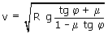
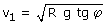
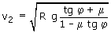
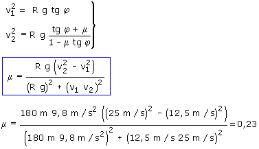

La máxima velocidad con que se puede tomar una curva peraltada viene dada por:  Aplicamos la fórmula al caso en que no hay rozamiento
μ = 0 y la curva se toma con velocidad  Aplicamos la fórmula al caso en que hay rozamiento μ y la curva se toma con velocidad v2 = 25 m/s (90 km/h):  Combinando las dos expresiones resulta un sistema de ecuaciones con dos incógnitas: φ, μ  |